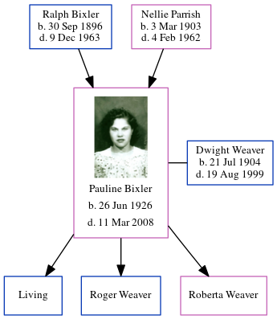

Susanna Eleanor Cowell 1808 - c1854
[ Home ] | [ Calendar ] | [ Surnames Index ] | [ Errors ] | [ Family History ]The child of William Cowell and Elizabeth Wales, Susanna Cowell, the first cousin four-times-removed on the mother's side of Nigel Horne, was born in St Peters, Thanet, Kent, England on 15 Apr 18081 and baptised there on 29 May 1808. On 6 Jun 1841, she was living at George Hill Road, St Peters, Thanet, Kent, England6.
She died c. Oct 1854 in Thanet2 and was buried St Lawrence in Thanet on 25 Oct 18543,4,5.
Parents
- William Castle was born on 8 Apr 1778
- Elizabeth was born c. 1768
Citations
- Kent, Canterbury Archdeaconry Baptisms - Findmypast
- England & Wales deaths 1837-2007 - Findmypast
- Kent, Canterbury Archdeaconry burials 1538-1988 - Findmypast
- England Deaths & Burials 1538-1991 - Findmypast
- England Deaths & Burials 1538-1991 - Findmypast
- 1841 England, Wales & Scotland Census - Findmypast (was age 33 and the daughter of the head of the household)
Media
Kent, Canterbury Archdeaconry burials 1538-1988 - GBPRS/CANT/D/95277267
England & Wales deaths 1837-2007 - BMD/D/1854/4/CM/000010/012
1841 England, Wales & Scotland Census Transcription - GBC-1841-0013965437
Kent, Canterbury Archdeaconry Baptisms Transcription - GBPRS-CANT-B-96346842
England Births & Baptisms 1538-1975 - R_883212376
England Births & Baptisms 1538-1975 - R_889840150
England Deaths & Burials 1538-1991 - R_277114399
Family Tree
Map
Generated by ged2site. Last updated on Jul 3, 2024